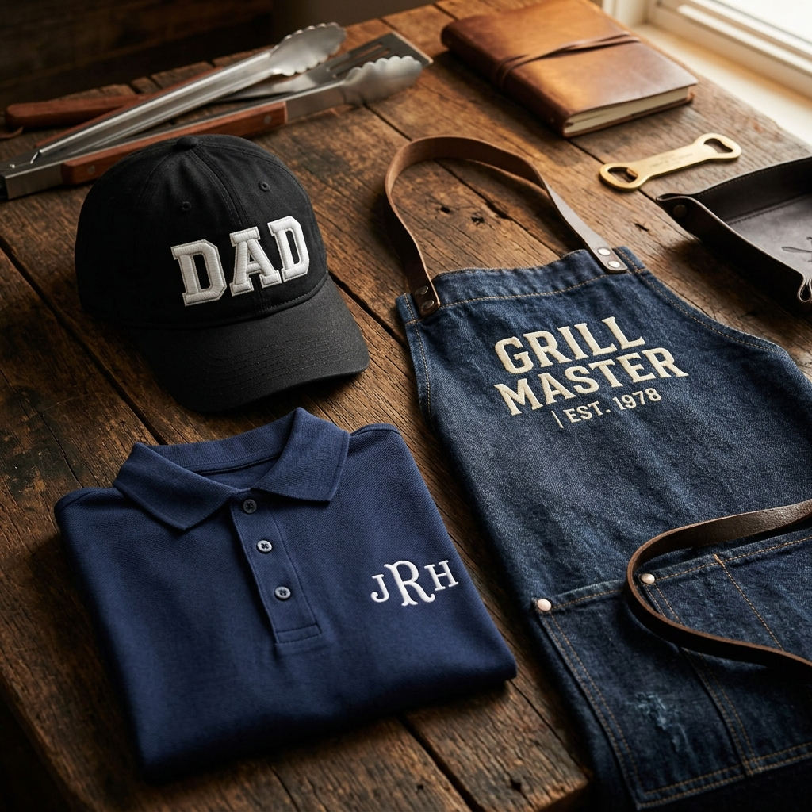

¿Otro año sin saber qué regalarle a papá?
Admitámoslo: encontrar un buen regalo para papá es una de las misiones más difíciles del año. Calcetines, ya tiene. Corbatas, ya no usa. Perfume, repite el mismo desde hace 10 años. Y preguntarle qué quiere siempre termina con el clásico: "No necesito nada, hijo."
Pero hay algo que papá sí usa todos los días, que le da estilo sin que parezca que se lo regalaron por compromiso, y que cada vez que lo estrene va a sentir que alguien realmente pensó en él: una prenda personalizada con bordado de alta calidad.
No es un regalo genérico. Es algo hecho a su medida, con su nombre, sus iniciales o el diseño que lo define. Y lo mejor: lo va a usar con orgullo porque no existe otro igual.
Las 3 Mejores Opciones de Regalo Bordado para Papá
En Bortex Bordados trabajamos con máquinas industriales de última generación que nos permiten hacer bordados de precisión sobre cualquier prenda. Aquí van las tres ideas que más nos piden para el Día del Padre:
🧢 1. Gorras con Bordado 3D (Relieve / Puff)
Esta es, sin duda, la opción más popular y la que más impacta. El bordado 3D — también conocido como puff embroidery — es una técnica especial que utiliza una espuma de alta densidad debajo de los hilos para que las letras o el diseño sobresalgan de la superficie de la gorra con un relieve tridimensional.
El resultado es un acabado que se ve y se siente premium. Las gorras con bordado 3D tienen ese estilo que combina lo urbano con lo elegante — exactamente el tipo de accesorio que papá va a querer ponerse todos los días.
- ¿Cómo funciona? Se coloca una espuma especial sobre la gorra, la máquina borda por encima y luego se retira el excedente. El hilo atrapa la espuma y crea el efecto de relieve permanente.
- Opciones de diseño: Iniciales, nombres, logos de equipos deportivos, marcas personales, números, frases cortas.
- Colores: Combinaciones ilimitadas — hilo negro sobre gorra blanca, dorado sobre negro, azul marino sobre gris, o lo que mejor le quede a su estilo.
- Posiciones: Frontal (la más clásica), lateral o trasera.
- Bonus: Podemos hacer gorras idénticas padre-hijo. ¡Un regalo doble que se ve increíble!
Una gorra con bordado 3D no se ve igual que una gorra plana de tienda. Se nota la diferencia desde lejos — y papá lo sabe.
👔 2. Playeras Tipo Polo con Bordado en el Pecho
La polo es la prenda comodín de todo papá. La usa para salir el fin de semana, para la comida familiar, para el trabajo casual, para el campo de golf o simplemente para verse arreglado sin esfuerzo. Ahora imagínala con sus iniciales bordadas en el pecho — ese toque de elegancia que convierte una prenda básica en algo exclusivo.
Bordamos sobre polos de algodón, piqué, dryfit y poliéster con hilos de alta calidad. El diseño puede ir en el pecho izquierdo (estilo clásico), en la manga o incluso en la parte trasera del cuello.
- Para el papá ejecutivo: Iniciales en tipografía serif discreta, colores neutros (azul marino, negro, gris Oxford).
- Para el papá deportivo: Logo de su equipo favorito, número significativo o emblema de su deporte.
- Para el papá emprendedor: El logotipo de su negocio o marca personal bordado con acabado profesional.
- Para el papá con humor: Frases como "Papá #1", "El Jefe de la Casa" o un diseño personalizado con un hobby (pesca, moto, música, etc.).
Es un regalo que eleva lo cotidiano. Y como el bordado es permanente, no se despinta, no se pela y no se cuartea — dura lo que dure la polo.
🔥 3. El Mandil del Rey del Asador
Si tu papá es de los que se adueña de la parrilla cada fin de semana, toma las pinzas como si fueran un cetro y nadie puede tocar su fuego… entonces este regalo es para él.
Bordamos mandiles gruesos de mezclilla, lona o gabardina con su nombre, su apodo de parrillero o una frase que lo defina. No es un mandil de cocina cualquiera — es su uniforme oficial de asador, hecho con la misma calidad de bordado que usamos para uniformes corporativos.
- Frases populares: "El Rey del Asador", "Parrillero Profesional desde [año]", "La carne la pongo yo", "Maestro Asador [nombre]", "Chef Papá".
- Diseños extras: Parrilla, fuego, tenedores cruzados, humo, estrellas de chef, logos personalizados.
- Materiales: Mezclilla gruesa, lona encerada, gabardina pesada — telas que resisten el calor, las manchas de grasa y el humo de la leña.
- Personalización total: Podemos agregar bolsillos bordados, su nombre en la pechera y un diseño en el frente.
Es un regalo que papá va a presumir cada vez que encienda el carbón. Y sus amigos van a querer uno igual.
"Papá no pide regalos. Pero cuando le das algo hecho especialmente para él, se le nota en la cara."
¿Por Qué el Bordado y No una Impresión?
Cuando se trata de regalar algo para papá, la durabilidad importa. Un regalo que se despinta a la tercera lavada o que se cuartea con el sol no es digno de él. Por eso el bordado de máquina industrial es la opción correcta:
- Resistencia extrema: Los hilos de poliéster industrial que usamos soportan uso diario, fricción, sol, sudor y lavados repetidos sin perder color ni forma.
- Acabado premium: El bordado tiene textura, volumen y un brillo sutil que la impresión simplemente no puede igualar. Se ve y se siente de mayor calidad.
- Cero mantenimiento: No requiere cuidados especiales. Se lava normal, se seca normal, y sigue viéndose como nuevo.
- Permanente: El bordado está cosido en la tela — no se pela, no se encoge, no se despega. Dura lo que dure la prenda.
Un papá que usa su gorra bordada 3D todos los días durante años y sigue viéndose perfecta — eso es calidad real.
¿Cuánto Tiempo Necesito para Hacer el Pedido?
El Día del Padre llega rápido, y los regalos personalizados necesitan su tiempo. Aquí va nuestra guía de tiempos:
- Gorras con bordado 3D: 2–4 días hábiles.
- Polos con iniciales o logos sencillos: 1–3 días hábiles.
- Mandiles con diseño personalizado: 3–5 días hábiles (incluye digitalización del diseño).
- Combos (gorra + polo, por ejemplo): 3–5 días hábiles.
Consejo: Mientras más temprano nos contactes, más opciones de colores, materiales y diseños tendrás disponibles. ¡No esperes a la última semana!
¿Cómo Hacer Tu Pedido?
Es muy sencillo:
- Paso 1: Mándanos un mensaje por WhatsApp con tu idea: qué artículo quieres (gorra, polo, mandil), qué texto o diseño quieres bordar, y los colores que prefieres.
- Paso 2: Te respondemos con la cotización detallada y opciones de materiales.
- Paso 3: Aprobamos juntos el diseño digitalizado — te mostramos una vista previa antes de bordar.
- Paso 4: ¡Lo bordamos, lo empacamos y te lo entregamos listo para regalar!
🎁 ¿Ya sabes qué regalarle a papá?
Una gorra 3D con sus iniciales, una polo con su logo favorito o un mandil de parrillero con su nombre. Mándanos un mensaje y te cotizamos en menos de 24 horas. ¡Hazlo antes de que se acerque la fecha!
Cotizar por WhatsApp Cotizar en línea